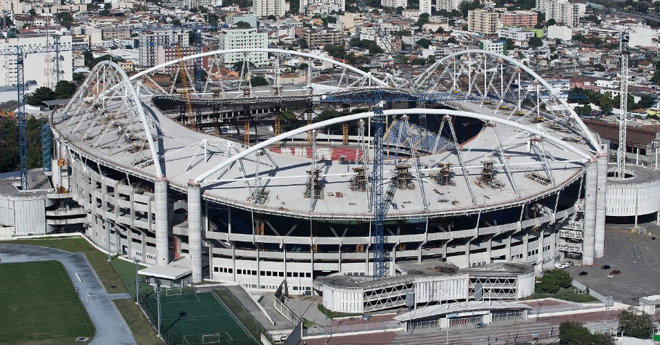
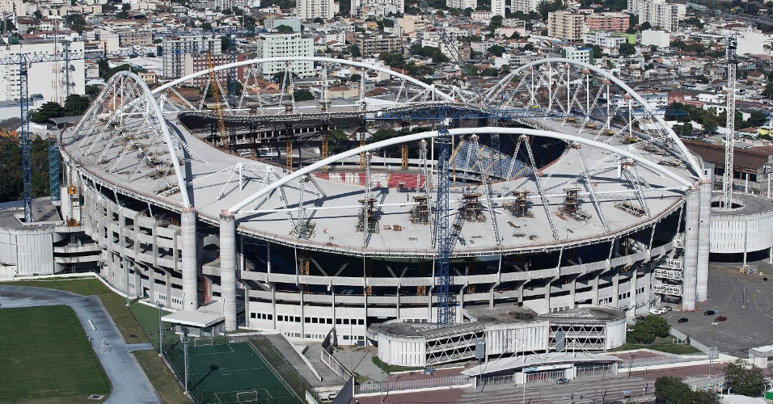

Rio de Janeiro (informalmente referida como Rio) é um município brasileiro, capital do estado homônimo, situado no Sudeste do país. Maior destino turístico internacional no Brasil, da América Latina e de todo o Hemisfério Sul, a capital fluminense é a cidade brasileira mais conhecida no exterior, funcionando como um "espelho", ou "retrato" nacional, seja positiva ou negativamente. É a segunda maior metrópole do Brasil (depois de São Paulo), a sexta maior da América e a trigésima quinta do mundo. Sua população estimada pelo IBGE para 1.º de julho de 2020 era de 6 747 815 habitantes. Tem o epíteto de Cidade Maravilhosa e aquele que nela nasce é chamado de carioca. É um dos principais centros econômicos, culturais e financeiros do país, sendo internacionalmente conhecida por diversos ícones culturais e paisagísticos, como o Pão de Açúcar, o morro do Corcovado com a estátua do Cristo Redentor, as praias dos bairros de Copacabana, Ipanema e Barra da Tijuca, entre outras; os estádios do Maracanã e Nilton Santos; o bairro boêmio da Lapa e seus arcos; o Theatro Municipal do Rio de Janeiro; as florestas da Tijuca e da Pedra Branca; a Quinta da Boa Vista; a Biblioteca Nacional; a ilha de Paquetá; o réveillon de Copacabana; o carnaval carioca; a Bossa Nova e o samba. Parte da cidade foi designada Patrimônio Cultural da Humanidade pela UNESCO em 1 de julho de 2012
Fonte: https://pt.wikipedia.org/wiki/Rio_de_Janeiro
 
